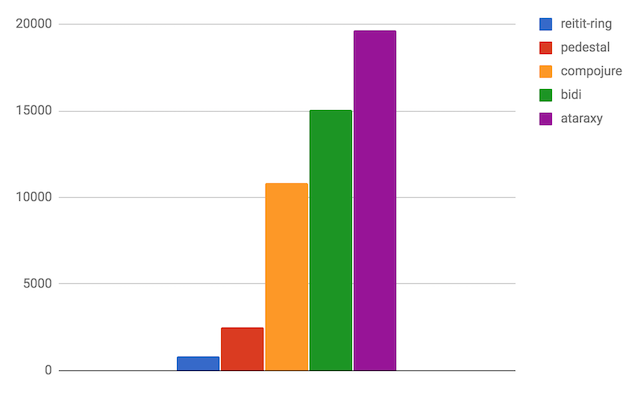

Performance
Reitit tries to be both great in features and be really, really fast. Originally the routing was ported from Pedestal, but has been mostly rewritten.

Rationale
- Multiple routing algorithms, chosen based on the route tree
- Route flattening and re-ordering
- Managed mutability over immutability
- Precompute/compile as much as possible (matches, middleware, interceptors, routes)
- Use abstractions that enable JVM optimizations
- Use small functions to enable JVM Inlining
- Protocols over Multimethods
- Records over Maps
- Always be measuring
- Don't trust the (micro-)benchmarks
Does routing performance matter?
Well, it depends. With small route trees, it might not. But, with large (real-life) route trees, difference between the fastest and the slowest tested libs can be two or three orders of magnitude. For busy sites it actually matters if you routing request takes 100 ns or 100 µs. A lot.
Tests
All perf tests are found in the repo and have been run with the following setup:
;;
;; start repl with `lein perf repl`
;; perf measured with the following setup:
;;
;; Model Name: MacBook Pro
;; Model Identifier: MacBookPro11,3
;; Processor Name: Intel Core i7
;; Processor Speed: 2,5 GHz
;; Number of Processors: 1
;; Total Number of Cores: 4
;; L2 Cache (per Core): 256 KB
;; L3 Cache: 6 MB
;; Memory: 16 GB
;;
NOTE: Tests are not scientific proof and may contain errors. You should always run the perf tests with your own (real-life) routing tables to get more accurate results for your use case. Also, if you have idea how to test things better, please let us know.
Simple Example
The routing sample taken from bide README:
(require '[reitit.core :as r])
(require '[criterium.core :as cc])
(def routes
(r/router
[["/auth/login" :auth/login]
["/auth/recovery/token/:token" :auth/recovery]
["/workspace/:project/:page" :workspace/page]]))
;; Execution time mean (per 1000) : 3.2 µs -> 312M ops/sec
(cc/quick-bench
(dotimes [_ 1000]
(r/match-by-path routes "/auth/login")))
;; Execution time mean (per 1000): 530 µs -> 1.9M ops/sec
(cc/quick-bench
(dotimes [_ 1000]
(r/match-by-path routes "/workspace/1/1")))
Based on the perf tests, the first (static path) lookup is 300-500x faster and the second (wildcard path) lookup is 4-24x faster that the other tested routing libs (Ataraxy, Bidi, Compojure and Pedestal).
But, the example is too simple for any real benchmark. Also, some of the libraries always match on the :request-method too and by doing so, do more work than just match by path. Compojure does most work also by invoking the handler.
So, we need to test something more realistic.
RESTful apis
To get better view on the real life routing performance, there is test of a mid-size rest(ish) http api with 50+ routes, having a lot of path parameters. The route definitions are pulled off from the OpenSensors swagger definitions.
Thanks to the snappy new segment-tree algorithm, reitit-ring is fastest here. Pedestal is also fast with it's prefix-tree implementation.
CQRS apis
Another real-life test scenario is a CQRS-style route tree, where all the paths are static, e.g. /api/command/add-order. The 300 route definitions are pulled out from Lupapiste.
Both reitit-ring and Pedestal shine in this test, thanks to the fast lookup-routers. On average, they are two and on best case, three orders of magnitude faster than the other tested libs. Ataraxy failed this test on Method code too large! error.

NOTE: in real life, there are usually always also wild-card routes present. In this case, Pedestal would fallback from lookup-router to the prefix-tree router, which is order of magnitude slower (30x in this test). Reitit would handle this nicely thanks to it's :mixed-router: all static routes would still be served with :lookup-router, just the wildcard routes with :segment-tree. The performance would not notably degrade.
Why measure?
The reitit routing perf is measured to get an internal baseline to optimize against. We also want to ensure that new features don't regress the performance. Perf tests should be run in a stable CI environment. Help welcome!
Looking out of the box
A quick poke to routers in Go indicates that the reitit is only few times slower than the fastest routers in Go. Which is really awesome (if true).
Performance tips
Few things that have an effect on performance:
- Wildcard-routes are an order of magnitude slower than static routes
- It's ok to mix non-wildcard and wildcard routes in a same routing tree as long as you don't disable the conflict resolution => if no conflicting routes are found, a
:mixed-routercan be created, which internally has a fast static path router and a separate wildcard-router. So, the static paths are still fast. - Move computation from request processing time into creation time, using by compiling middleware & route data.
- Unmounted middleware (or interceptor) is infinitely faster than a mounted one effectively doing nothing.